Kan datamaskiner bli kunstnere?
Maskinlæring og malerier
Ved hjelp av maskinlæring er det blitt mulig å få datamaskiner til å tegne bilder, og forsøke å være kunstnere. I denne artikkelen skal vi bruke dette til å benytte oss av de stilmessige egenskapene i et bilde til å tegne innholdet i et annet bilde på nytt. Algoritmene vi skal bruke er inspirert av den menneskelige hjernen - såkalt Deep learning. Dette fungerer ved å sette opp en graf med mange lag av noder i et forsøk på å imitere hjernen. Noder i grafen tilsvarer nevroner og kanter synapser. Deretter mater man systemet med informasjon, slik at synapser kan styrkes eller svekkes. Slik kan systemet "lære" og stadig tilpasse seg til ny informasjon. Det kalles altså deep learning fordi vi har en dyp graf, og fordi systemet lærer litt på samme måte som mennesker. Forskerene som har utviklet akkurat denne tjenenesten her har brukt dette til objektgjenkjenning - eller kanskje mer presist - objekt-mønstergjenkjenning.
Vi skal benytte oss av denne Torch-implementasjonen, som igjen bruker de omtalte algoritmene for å tegne bilder. Om du har lyst til å prøve dette på egenhånd må du brette opp ermene og forberede deg på å innstallere en del greier. Jeg vil anbefale å også laste ned CUDA, cuDNN eller OpenCL-backend, slik får du benyttet deg av grafikkortet ditt til å gjøre utregninger. Uten dette tar det ekstremt lang tid å prosessere bildene. Du må også antagelig tweake litt parametere for å unngå å gå tom for minne ol. Det var iallefall min erfaring med noen av bildene.
Hvis du har lyst til å "jukse" litt kan du benytte deg av en tjeneste som deepart.io, som fungerer på omtrent samme måte. Om du er interessert i dype nevrale netteverk og algoritmene som er brukt, kan lese mer om dem her.
Arne Kleng Dahle
Som noen av dere kanskje vet er min farfar kunstner. Jeg tenkte derfor å ha det litt gøy med å bruke bildene hans som stiler til å tegne om andre bilder, og se hvordan de blir i Arne Kleng Dahle-stil. Arne maler uttrykksfulle bilder, ofte abstrakte eller delvis abstrakte, gjerne av natur. Vi kommer derfor til å starte med noen landskapsbilder, og siden prøve litt forskjellig og forhåpentligvis ha det litt gøy.
Nå som jeg skriver denne artikkelen har jeg dessverre bare tilgang til de bildene som er lagt ut på nettet. Noen av dem har dårlig oppløsning, men kanskje vi kan få til noe allikevel. De fleste bildene av Arne som jeg har fått tak i er blant de eldre. Jeg skulle gjerne også hatt noen av de nyere, ettersom han har malt mange (etter min mening kule) bilder i det siste. Kanskje jeg oppdaterer denne siden og legger til flere bilder etter hvert.
Jeg kommer til å plassere bildene på rader nedover i denne rekkefølgen:
1. Input bilde som skal tegnes om, 2. Arnes bilde som vi bruker som stil, 3. Resultat/output-bilde. La oss begynne.
Vi starter med et høstbilde:
| 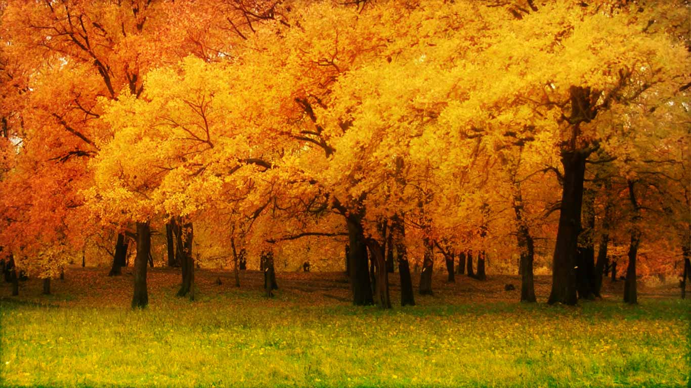 | 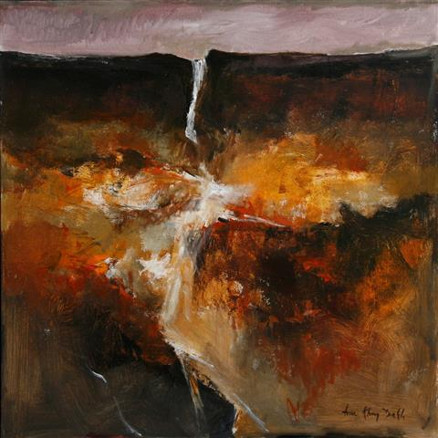 | 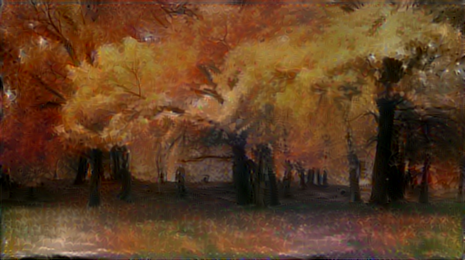 |
Ikke dårlig! Om vi tar i betraktning at vi brukte et bilde av et landskap og en elv til å tegne trær, må jeg si at resultatet ble overraskende bra. La oss prøve med noen vinterbilder.
| 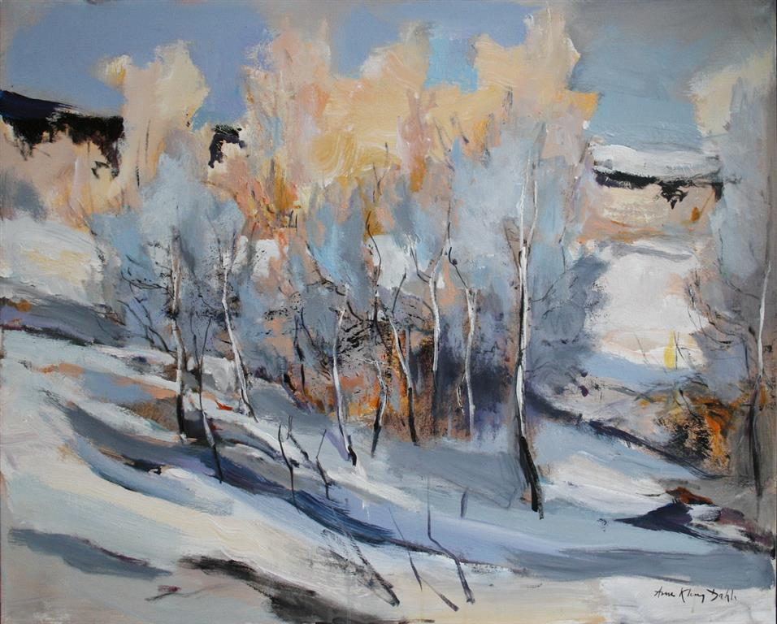 | 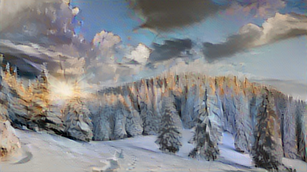 |
Nå snakker vi her! Hva med noen sommerbilder?
| 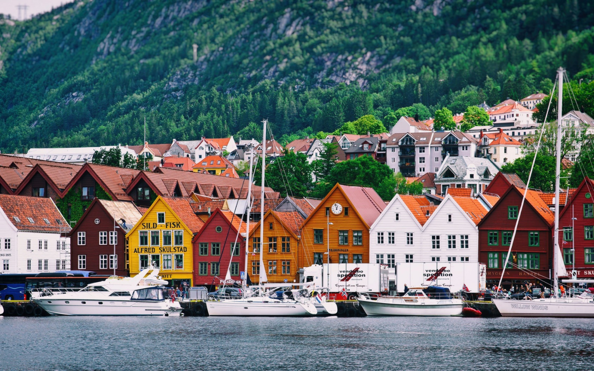 | 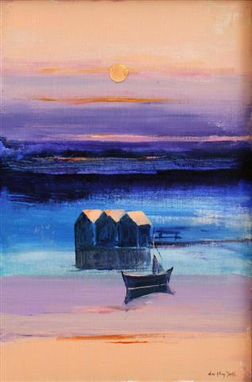 | 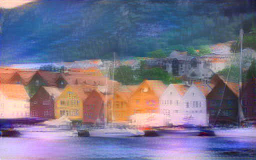 |
Vi kombinerte et bilde tatt på dagen, med et maleri med en sommernatt som motiv. Både stil og lys ble overført, til et relativt troverdig bilde.
Kanskje vi skal prøve noen kjente malerier, for å se hvordan AKD ville ha malt dem?

|

|
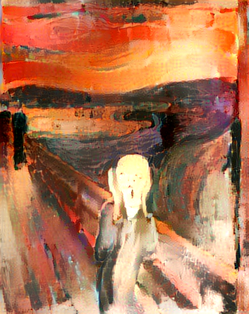 |
| 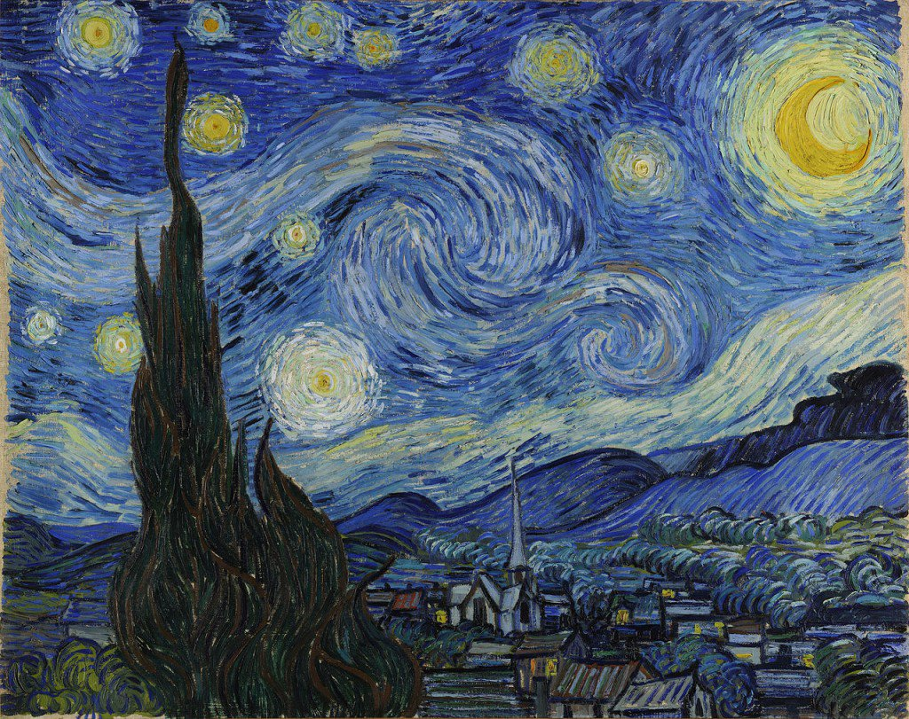 | 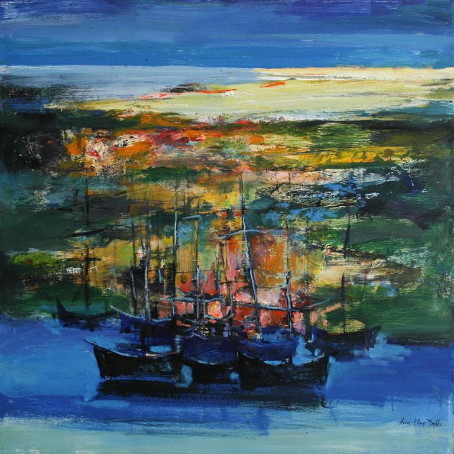 | 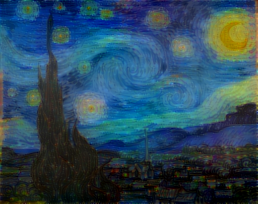 |
| 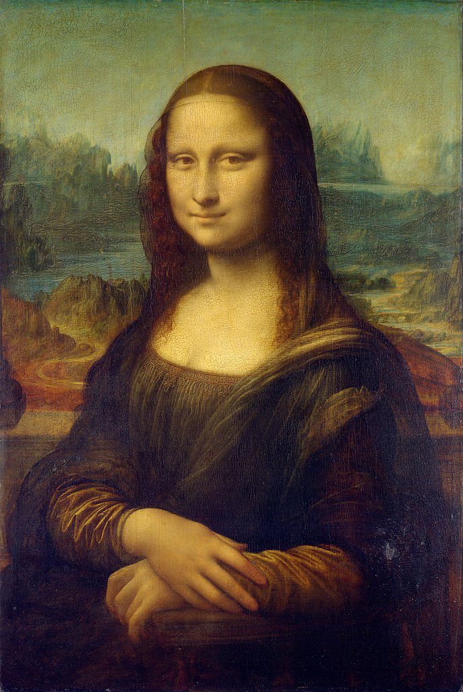 | 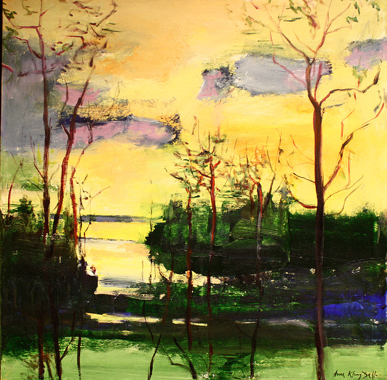 | 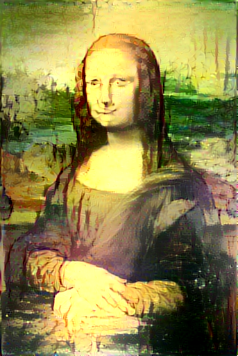 |
Avsluttende ord
Maskinlæring brukes mer og mer i kunstsammenheng. Det har bidratt til flere oppdagelser rundt gamle kunstverk. En teknikk som er spesielt kraftig er multimodal maskinlæring hvor det er vanlig å bruke en kombinasjon av vanlige fotografier og røntgenstråler til å avdekke flere lag i et maleri. Hvis tidligere lag er blitt vasket vekk eller tegnet over kan denne teknikken avsløre motivet under. Her kan du lære mer om multimodal maskinlæring. Om du vil vite mer om Arne har han en hjemmeside som jeg ikke er helt sikker på om oppdateres lenger.